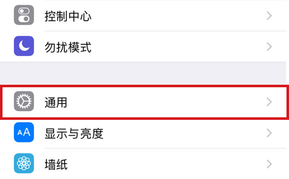
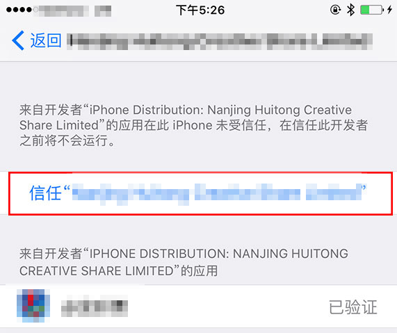

苹果IOS系统用户必看
由于iOS增强了企业版开发者证书的验证规则，因此iOS需要用户手动信任企业证书，才能正常使用。
如果您知道如何操作,请点击此处快速跳转到设备管理设置界面, 并选择信任对应证书
默认情况下，打开下载app是这样的情况
1点开App,弹出未受信任的开发者，记住弹框中冒号后面的大写字母。关闭，进入设置
2依次打开：设置 >通用 >

3进入：设备管理 点此快速进入
4找到所对应的企业级应用（就是打开App,冒号后面的大写字母）
5选择信任，进入

6点击弹出的弹框中的“信任“。大功告成，可以愉快的进入App了！